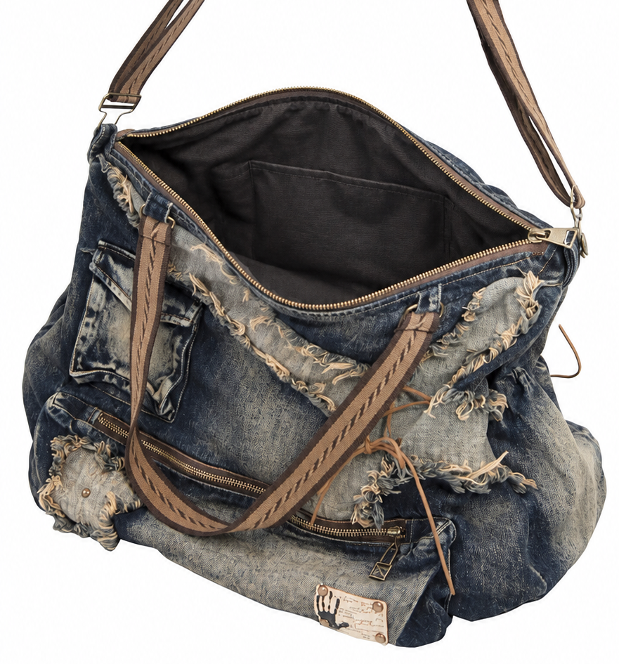

I have always preferred big bags. They leave room for things I need, things I might need, and things I forgot were there.
My friends say I should get a smaller one because everything disappears into the bottom.
But I like that nothing reveals itself all at once.